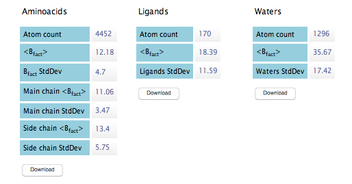
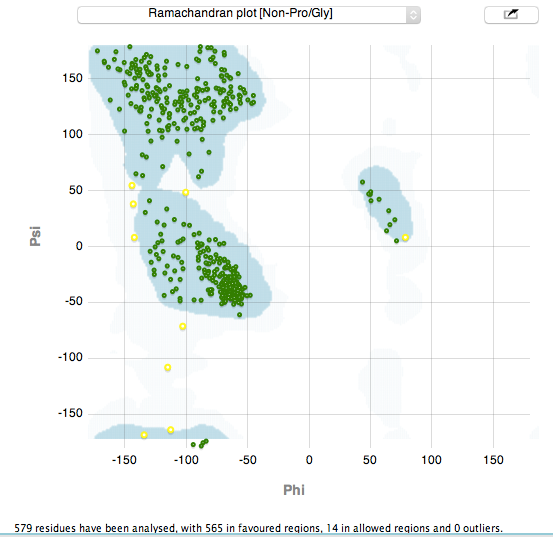
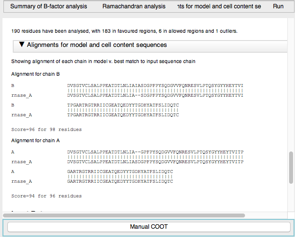

Enter reflections file (1) (to provide cell parameters) and the model(2) you want to analyse. If a AU content (3) with the expected sequences, is provided then the alignment of the model and expected sequences is shown in the report. The AU content should be entered in the Define AU content task but can be entered on the fly by clicking the file browser icon and selecting a sequence file.
This graph shows the average B-factors, separated by main chain and side chain. For clarity reasons, the side chain B-factors are shown with inverted sign.
This table shows B-factor information for Table 1.
This graph shows a Ramachandran-style plot, separated by non-Proline and non-Glycine, Proline and Glycine. These plots are generated with the Richardsons' Top 500.
The sequence alignment for each chain in the model v. the best fit sequence in the AU content is shown.